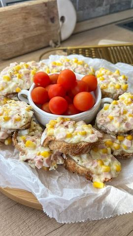

Savršeni brusketi

Moja beleška
SačuvanoUh.. 🤤 Ovo je jedan od onih recepata koji sam preuzela od sestre, više i ne pamtim pre koliko godina, znam samo da su večno bili glavni na svim mogućim okupljanjima sa prijateljima, da su ih sve drugarice prepisivale u svesku i da se još nije pojavio neko ko ih ne voli 🥰 Kalorični, zasitni, jedina mana, ne znaš kako da se zaustaviš 🙈 Kad još dodam da je vreme pripreme kratko, a da umeće u kuhinji nije potrebno, znam da ćete ih spremati ☺️☺️☺️
Sastojci
- Sastojci
Priprema
Mere su za dva baget hleba otprilike, pa možete po potrebi količinu ili smanjiti na pola ili duplirati.. Sve sastojke sjedinite i mazete preko parčića u debljem sloju, u zagrejanoj rerni na 200C i nije potrebno ni 10 minuta, samo toliko da se kackavalj istopi, da se smesa nekako poveze, a hlebcici postanu hrskavi.. 🤤☺️ Sjajno je što smesu možete pripremiti i dan ranije i čuvati poklopljenu u fizideru, pa po potrebi iskoristiti ☺️ Jedva čekam vaše utiske 🥰🥰🥰
Originalni opis sa Instagrama
Savršeni brusketi 🥖🌸 Uh.. 🤤 Ovo je jedan od onih recepata koji sam preuzela od sestre, više i ne pamtim pre koliko godina, znam samo da su večno bili glavni na svim mogućim okupljanjima sa prijateljima, da su ih sve drugarice prepisivale u svesku i da se još nije pojavio neko ko ih ne voli 🥰 Kalorični, zasitni, jedina mana, ne znaš kako da se zaustaviš 🙈 Kad još dodam da je vreme pripreme kratko, a da umeće u kuhinji nije potrebno, znam da ćete ih spremati ☺️☺️☺️ Sastojci: •200 gr šunke •250 gr rendane gaude •250 gr pavlake •150 gr majoneza •250 gr kuvanog kukuruza sećerca •3 kuvana jaja sitnije seckana •so, origano po ukusu Mere su za dva baget hleba otprilike, pa možete po potrebi količinu ili smanjiti na pola ili duplirati.. Sve sastojke sjedinite i mazete preko parčića u debljem sloju, u zagrejanoj rerni na 200C i nije potrebno ni 10 minuta, samo toliko da se kackavalj istopi, da se smesa nekako poveze, a hlebcici postanu hrskavi.. 🤤☺️ Sjajno je što smesu možete pripremiti i dan ranije i čuvati poklopljenu u fizideru, pa po potrebi iskoristiti ☺️ Jedva čekam vaše utiske 🥰🥰🥰 • • • #brusketi #idejezadorucak #idejezaveceru #mezetluk #ukusnahrana #proverenirecepti #brzoilako